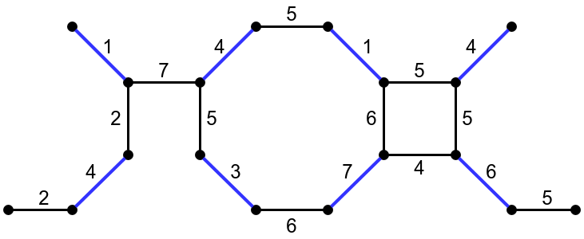
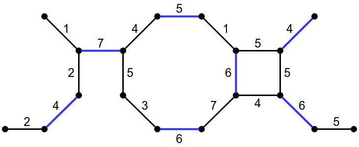

template <typename Graph, typename MateMap> void maximum_weighted_matching(const Graph& g, MateMap mate); template <typename Graph, typename MateMap, typename VertexIndexMap> void maximum_weighted_matching(const Graph& g, MateMap mate, VertexIndexMap vm); template <typename Graph, typename MateMap> void brute_force_maximum_weighted_matching(const Graph& g, MateMap mate); template <typename Graph, typename MateMap, typename VertexIndexMap> void brute_force_maximum_weighted_matching(const Graph& g, MateMap mate, VertexIndexMap vm);
Before you continue, it is recommended to read about maximal cardinality matching first. A maximum weighted matching of an edge-weighted graph is a matching for which the sum of the weights of the edges is maximum. Two different matchings (edges in the matching are colored blue) in the same graph are illustrated below. The matching on the left is a maximum cardinality matching of size 8 and a maximal weighted matching of weight sum 30, meaning that is has maximum size over all matchings in the graph and its weight sum can't be increased by adding edges. The matching on the right is a maximum weighted matching of size 7 and weight sum 38, meaning that it has maximum weight sum over all matchings in the graph.
|  |  |
Both maximum_weighted_matching and brute_force_maximum_weighted_matching find a maximum weighted matching in any undirected graph. The matching is returned in a MateMap, which is a ReadWritePropertyMap that maps vertices to vertices. In the mapping returned, each vertex is either mapped to the vertex it's matched to, or to graph_traits<Graph>::null_vertex() if it doesn't participate in the matching. If no VertexIndexMap is provided, both functions assume that the VertexIndexMap is provided as an internal graph property accessible by calling get(vertex_index, g).
The maximum weighted matching problem was solved by Edmonds in [74]. The implementation of maximum_weighted_matching followed Chapter 6, Section 10 of [20] and was written in a consistent style with edmonds_maximum_cardinality_matching because of their algorithmic similarity. In addition, a brute-force verifier brute_force_maximum_weighted_matching simply searches all possible matchings in any graph and selects one with the maximum weight sum.
For maximum_weighted_matching, the management of blossoms is much more involved than in the case of max_cardinality_matching. It is not sufficient to record only the outermost blossoms. When an outermost blossom is expanded, it is necessary to know which blossom are nested immediately with it, so that these blossoms can be restored to the status of the outermost blossoms. When augmentation occurs, blossoms with strictly positive dual variables must be maintained for use in the next application of the labeling procedure.
The outline of the algorithm is as follow:
boost/graph/maximum_weighted_matching.hpp
An undirected graph. The graph type must be a model of Vertex and Edge List Graph and Incidence Graph. The edge property of the graph property_map<Graph, edge_weight_t> must exist and have numeric value type.IN: VertexIndexMap vm
Must be a model of ReadablePropertyMap, mapping vertices to integer indices.OUT: MateMap mate
Must be a model of ReadWritePropertyMap, mapping vertices to vertices. For any vertex v in the graph, get(mate,v) will be the vertex that v is matched to, or graph_traits::null_vertex() if v isn't matched.
Let m and n be the number of edges and vertices in the input graph, respectively. Assuming the VertexIndexMap supplied allows constant-time lookup, the time complexity for maximum_weighted_matching is O(n3). For brute_force_maximum_weighted_matching, the time complexity is exponential of m. Note that the best known time complexity for maximum weighted matching in general graph is O(nm+n2log(n)) by [76], but relies on an efficient algorithm for solving nearest ancestor problem on trees, which is not provided in Boost C++ libraries.
The file example/weighted_matching_example.cpp
contains an example.
| Copyright © 2018 |
Yi Ji (jiy@pku.edu.cn) |